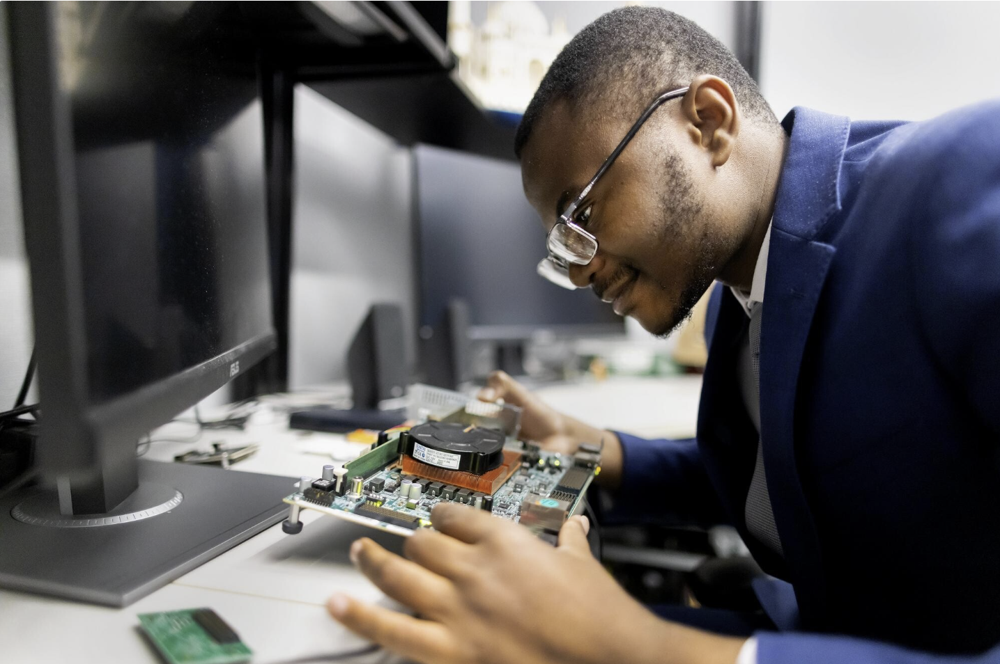

Built by someone who wouldn't accept the tradeoff

Why Fluid Silicon exists
Fluid Silicon was founded by Nhlanhla Mavuso, a graduate of Penn's Vagelos Integrated Program in Energy Research (VIPER), jointly housed in the School of Arts & Sciences and the School of Engineering and Applied Science. Nhlanhla is originally from Simunye, Eswatini.
Nhlanhla started Fluid Silicon to solve a problem he saw as unnecessary: chips are engineered for a worst-case scenario that rarely reflects how they actually perform once deployed, wasting energy and performance across every device in the fleet. Fluid Silicon is his answer, a platform that lets reconfigurable chips monitor their own condition in real time and operate closer to their real potential rather than a fixed, conservative average.
President's Sustainability Prize
In 2026, Nhlanhla was awarded Penn's President's Sustainability Prize for Fluid Silicon, one of the largest awards of its kind in higher education. The prize includes $100,000 in project funding and a $50,000 living stipend to support the project after graduation.
"Fluid Silicon's adaptive approach to chip performance exemplifies Penn's strength in applied innovation and offers a scalable path to greater efficiency and sustainability," said Penn President J. Larry Jameson.
Shaped by mentorship and access
Nhlanhla credits his President's Sustainability Prize faculty mentor, André DeHon, an electrical engineering professor and a leading figure in reprogrammable chip architecture, along with access to specialized computing resources through DeHon's Implementation of Computation Group and interdisciplinary training through VIPER, for shaping Fluid Silicon.
Scaling the technology, wherever it's needed
Fluid Silicon has already demonstrated its technology on real commercial FPGAs. The next phase is proving it at scale, across the industries that depend on it most, growing the team beyond a single founder along the way.